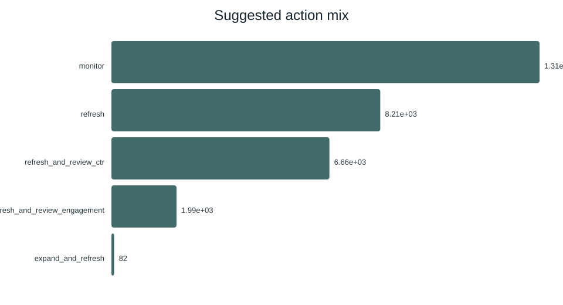

Refresh Opportunity Scoring for Search Discoverability
Abstract
This study asks which pages should be prioritized first for content refresh review. I used the anonymized FlyRank internship starter dataset with 30,000 page-level rows and compared a baseline rule engine against supervised models. The evaluation used the same client-holdout split for both baseline and model. The selected random forest reached Precision@50 of 0.740 versus 0.240 for the baseline, an observed ranking lift on this dataset and split. The output is a ranked queue with reason codes for editorial decision support.
Introduction / Problem statement
Teams have limited editorial capacity and need a practical way to decide which pages to refresh first. This project supports that triage decision by ranking pages by decline risk and likely refresh opportunity, then mapping the ranking to clear action categories.
Data
Source: data/raw/content_refresh_anonymized.csv (30,000 pseudonymized rows, trailing-90-day metrics). The work excludes client-identifying fields and does not publish private queries, domains, URLs, or credentials. The analysis uses only public-safe aggregate metrics.
Methodology
- Lane: Refresh / Content Opportunity Scoring
- Label:
is_declining_labelas decline-risk proxy - Baseline: transparent rule score with reason codes
- Models compared: logistic regression, decision tree, random forest
- Validation design: client-holdout split for model and baseline
- Leakage controls:
trend_direction/trend_pctexcluded from features; IDs not used as predictors
Results
Baseline Precision@50: 0.240Model Precision@50: 0.740Observed lift: ~3.1×
Model and baseline were evaluated on the same split. The random forest outperformed baseline ranking quality at top-K while maintaining stronger overall discrimination.


Limitations & honest framing
- This is observational analysis and does not prove causal ranking effects.
- Results are directional and intended for decision support.
- Recommendations require human review before content changes are published.
- The starter sample should be extended with full-warehouse replication for broader confidence.
Ranked recommendations
- Prioritize high-confidence pages with
refresh_and_review_ctrreason codes. - Next, action
refresh_and_review_engagementpages where behavior lags. - Apply
refreshactions for decline-risk pages without severe CTR/engagement conflicts. - Keep low-confidence
monitoritems in watchlist status.
Reproducibility
Notebook and artifacts:
- work/notebooks/capstone.ipynb
- outputs/model_report.md
- work/capstone_report.md
- Run command:
python scripts/run_all.py
Acknowledgments & data credit
Built on the FlyRank ML Internship dataset — https://flyrank.ai.